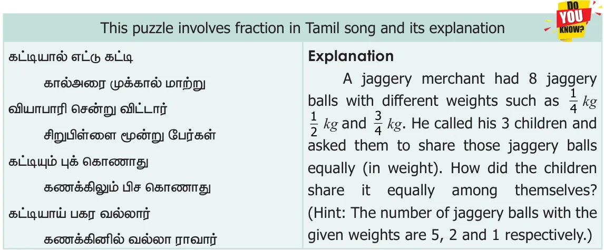

Expected Outcome
Step 1 Step 2
Open the Browser by typing the URL Click the check boxes on right hand side Link given below (or) Scan the QR Code. bottom to check respective answers GeoGebra work sheet named “Fraction Basic” will open. Click on New Problem and solve the problem.
Step1 Step2
Browse in the link:
